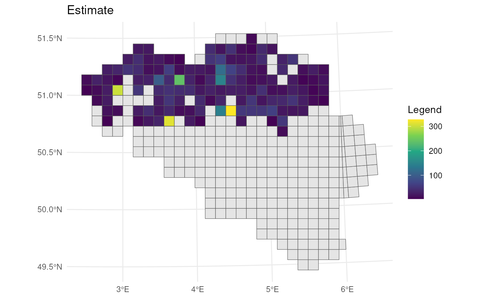
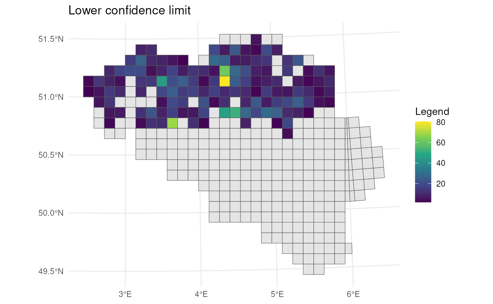
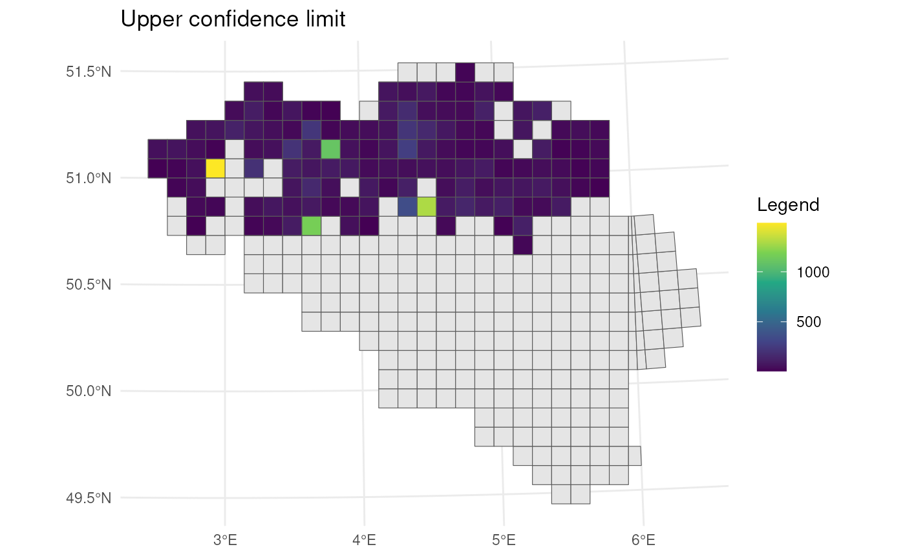
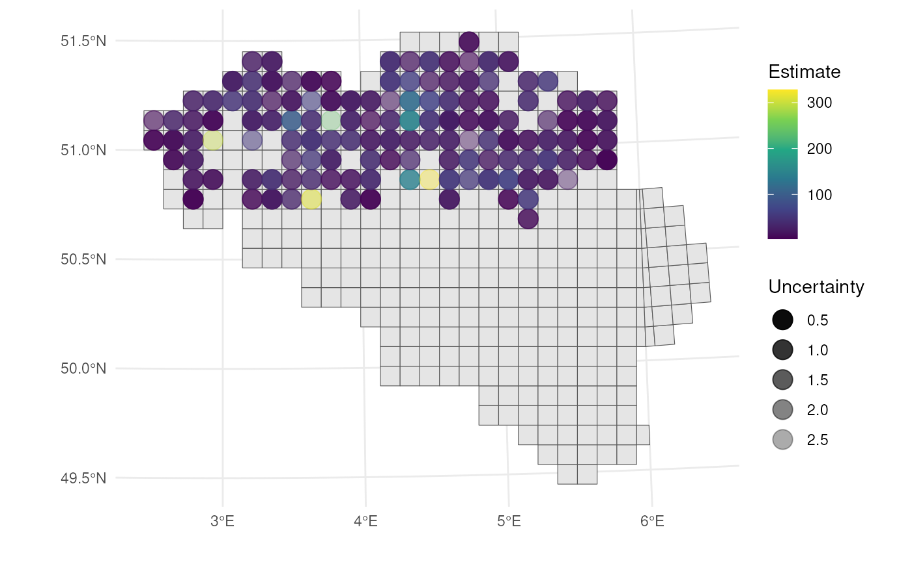
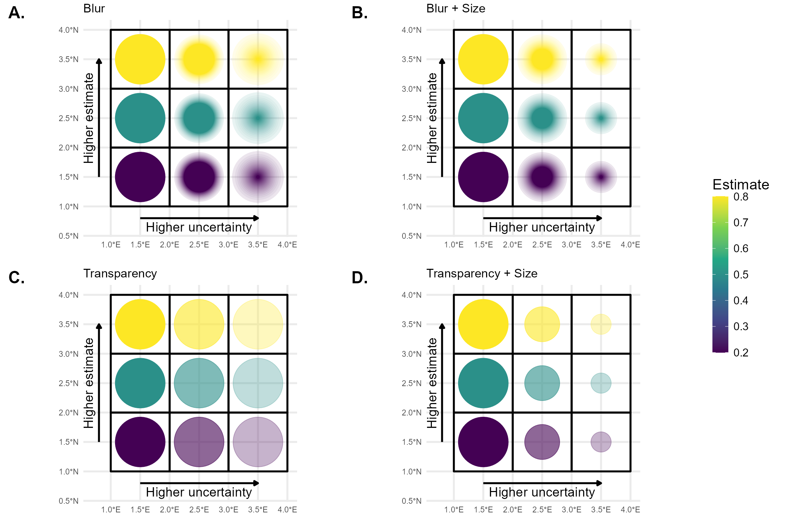

Visualising Spatial Trends
Source:vignettes/articles/visualising-spatial-trends.Rmd
visualising-spatial-trends.RmdIntroduction
This tutorial provides good practices regarding visualisation and interpretation of trends of indicators in space. The methods discussed here are more broadly applicable, be for this tutorial we focus on occurrence cubes from which biodiversity indicators are derived.
Calculating confidence intervals with dubicube
We reuse the example introduced in bootstrap confidence interval calculation tutorial where we look at an occurrence cube of birds in Belgium between 2000 en 2024 using the MGRS grid at 10 km scale. We calculate confidence limits for the mean number of observations per grid cell.
# Load packages
library(ggplot2) # Data visualisation
library(dplyr) # Data wrangling
library(sf) # Work with spatial objects
# Data loading and processing
library(frictionless) # Load example datasets
library(b3gbi) # Process occurrence cubes
library(dubicube) # Analysis of data quality & indicator uncertaintyLoading and processing the data
We load the bird cube data from the b3data data package using frictionless (see also here).
# Read data package
b3data_package <- read_package(
"https://zenodo.org/records/15211029/files/datapackage.json"
)
# Load bird cube data
bird_cube_belgium <- read_resource(b3data_package, "bird_cube_belgium_mgrs10")
head(bird_cube_belgium)
#> # A tibble: 6 × 8
#> year mgrscode specieskey species family n mincoordinateuncerta…¹
#> <dbl> <chr> <dbl> <chr> <chr> <dbl> <dbl>
#> 1 2000 31UDS65 2473958 Perdix perdix Phasi… 1 3536
#> 2 2000 31UDS65 2474156 Coturnix coturn… Phasi… 1 3536
#> 3 2000 31UDS65 2474377 Fulica atra Ralli… 5 1000
#> 4 2000 31UDS65 2475443 Merops apiaster Merop… 6 1000
#> 5 2000 31UDS65 2480242 Vanellus vanell… Chara… 1 3536
#> 6 2000 31UDS65 2480637 Accipiter nisus Accip… 1 3536
#> # ℹ abbreviated name: ¹mincoordinateuncertaintyinmeters
#> # ℹ 1 more variable: familycount <dbl>We process the cube with b3gbi. First, we select 3000 random rows to make the dataset smaller. We only keep grid cells with more then 10 entries. This is to reduce the computation time for this tutorial.
set.seed(123)
# Make dataset smaller
rows <- sample(nrow(bird_cube_belgium), 3000)
bird_cube_belgium <- bird_cube_belgium[rows, ] %>%
mutate(n_obs = n(), .by = "mgrscode") %>%
filter(n_obs > 10) %>%
select(-n_obs)
# Process cube
processed_cube <- process_cube(
bird_cube_belgium,
cols_occurrences = "n"
)
processed_cube
#>
#> Processed data cube for calculating biodiversity indicators
#>
#> Date Range: 2000 - 2024
#> Single-resolution cube with cell size 10km ^2
#> Number of cells: 134
#> Grid reference system: mgrs
#> Coordinate range:
#> xmin xmax ymin ymax
#> 460000 690000 5610000 5700000
#>
#> Total number of observations: 91206
#> Number of species represented: 316
#> Number of families represented: 67
#>
#> Kingdoms represented: Data not present
#>
#> First 10 rows of data (use n = to show more):
#>
#> # A tibble: 2,391 × 13
#> year cellCode taxonKey scientificName family obs minCoordinateUncerta…¹
#> <dbl> <chr> <dbl> <chr> <chr> <dbl> <dbl>
#> 1 2000 31UES44 2481714 Tringa totanus Scolo… 1 3536
#> 2 2000 31UFS05 2481740 Calidris temminc… Scolo… 3 3536
#> 3 2000 31UES43 2492943 Sylvia communis Sylvi… 8 1414
#> 4 2000 31UES44 5739317 Phoenicurus phoe… Musci… 10 1000
#> 5 2000 31UFS63 2481700 Scolopax rustico… Scolo… 1 3536
#> 6 2000 31UFS74 5845582 Chloris chloris Fring… 3 3536
#> 7 2000 31UFS65 2492960 Sylvia curruca Sylvi… 7 3536
#> 8 2000 31UFS07 2493091 Phylloscopus col… Phyll… 19 1414
#> 9 2000 31UDS86 2489214 Delichon urbicum Hirun… 3 3536
#> 10 2000 31UES85 2473958 Perdix perdix Phasi… 9 1414
#> # ℹ 2,381 more rows
#> # ℹ abbreviated name: ¹minCoordinateUncertaintyInMeters
#> # ℹ 6 more variables: familyCount <dbl>, xcoord <dbl>, ycoord <dbl>,
#> # utmzone <int>, hemisphere <chr>, resolution <chr>Analysis of the data
Let’s say we are interested in the mean number of observations per grid cell. We create a function to calculate this.
# Function to calculate statistic of interest
# Mean observations per grid cell
mean_obs_grid <- function(data) {
data %>%
dplyr::summarise(diversity_val = mean(obs), .by = "cellCode") %>%
as.data.frame()
}We get the following results:
head(
mean_obs_grid(processed_cube$data)
)
#> cellCode diversity_val
#> 1 31UES44 50.10526
#> 2 31UFS05 26.04762
#> 3 31UES43 35.42105
#> 4 31UFS63 16.93750
#> 5 31UFS74 24.94444
#> 6 31UFS65 26.17647On their own, these values don’t reveal how much uncertainty surrounds them. To better understand their variability, we use bootstrapping to estimate the distribution of the yearly means. From this, we can calculate bootstrap confidence intervals.
Bootstrapping
We use the bootstrap_cube() function to perform
bootstrapping (see also the bootstrap
tutorial).
bootstrap_results <- bootstrap_cube(
data_cube = processed_cube,
fun = mean_obs_grid,
grouping_var = "cellCode",
samples = 1000,
seed = 123
)
#> [1] "Performing group-specific bootstrap with `boot::boot()`."Interval calculation
Now we can use the calculate_bootstrap_ci() function to
calculate confidence limits (see also the bootstrap
confidence interval calculation tutorial). We get a warning message
for BCa calculation because we are using a relatively small dataset.
ci_mean_obs <- calculate_bootstrap_ci(
bootstrap_samples_df = bootstrap_results,
grouping_var = "cellCode",
type = c("perc", "bca", "norm", "basic"),
conf = 0.95
)
#> Warning in norm.inter(t, adj.alpha): extreme order statistics used as endpoints
#> Warning in norm.inter(t, adj.alpha): extreme order statistics used as endpoints
#> Warning in norm.inter(t, adj.alpha): extreme order statistics used as endpoints
#> Warning in norm.inter(t, adj.alpha): extreme order statistics used as endpoints
#> Warning in norm.inter(t, adj.alpha): extreme order statistics used as endpoints
#> Warning in norm.inter(t, adj.alpha): extreme order statistics used as endpoints
#> Warning in norm.inter(t, adj.alpha): extreme order statistics used as endpoints
#> Warning in norm.inter(t, adj.alpha): extreme order statistics used as endpoints
#> Warning in norm.inter(t, adj.alpha): extreme order statistics used as endpoints
#> Warning in norm.inter(t, adj.alpha): extreme order statistics used as endpoints
#> Warning in norm.inter(t, adj.alpha): extreme order statistics used as endpoints
# Make interval type factor
ci_mean_obs <- ci_mean_obs %>%
mutate(
int_type = factor(
int_type, levels = c("perc", "bca", "norm", "basic")
)
)
head(ci_mean_obs)
#> cellCode est_original int_type ll ul conf
#> 1 31UDS65 3.285714 norm 1.553808 5.061621 0.95
#> 2 31UDS65 3.285714 basic 1.287529 4.785714 0.95
#> 3 31UDS65 3.285714 perc 1.785714 5.283900 0.95
#> 4 31UDS65 3.285714 bca 2.000000 6.513062 0.95
#> 5 31UDS66 10.333333 norm -1.740367 22.170101 0.95
#> 6 31UDS66 10.333333 basic -3.064973 18.200000 0.95Visualising uncertainty in spatial trends
We can visualise the estimate and confidence levels in separate figures.
# Read MGRS grid from repository
mgrs10_belgium <- st_read(
"https://zenodo.org/records/15211029/files/mgrs10_refgrid_belgium.gpkg",
quiet = TRUE
)
# Get BCa intervals
bca_mean_obs <- ci_mean_obs %>%
filter(int_type == "bca") %>%
# Add MGRS grid
left_join(mgrs10_belgium, by = join_by(cellCode == mgrscode)) %>%
st_sf(sf_column_name = "geom", crs = st_crs(mgrs10_belgium))
# Visualise estimates
bca_mean_obs %>%
# Visualise result
ggplot() +
geom_sf(data = mgrs10_belgium) +
geom_sf(aes(fill = est_original)) +
# Settings
scale_fill_viridis_c(option = "D") +
labs(title = "Estimate", fill = "Legend") +
theme_minimal()
# Visualise lower CI's
bca_mean_obs %>%
# Visualise result
ggplot() +
geom_sf(data = mgrs10_belgium) +
geom_sf(aes(fill = ll)) +
# Settings
scale_fill_viridis_c(option = "D") +
labs(title = "Lower confidence limit", fill = "Legend") +
theme_minimal()
# Visualise upper CI's
bca_mean_obs %>%
# Visualise result
ggplot() +
geom_sf(data = mgrs10_belgium) +
geom_sf(aes(fill = ul)) +
# Settings
scale_fill_viridis_c(option = "D") +
labs(title = "Upper confidence limit", fill = "Legend") +
theme_minimal()
If we want to visualise estimates and uncertainty in a single figure, we need a good uncertainty measure. One straightforward option is the width of the confidence interval (CI):
\[ \text{CI width} = \text{upper limit} - \text{lower limit} \]
This directly reflects the uncertainty — wider intervals indicate greater uncertainty.
To allow for comparisons across spatial units with different magnitudes, we may prefer a relative measure of uncertainty such as the relative CI half-width, calculated as:
\[ \frac{\text{CI width}}{2 \times \text{estimate}} \]
This expresses the margin of error as a proportion of the estimate, which is easier to interpret. For example, a value of 0.1 implies ±10% uncertainty around the point estimate (assuming symmetric intervals).
Alternatively, we can use the bootstrap standard error as a measure of uncertainty. Similar to CI width, it can be expressed in absolute or relative terms (e.g., standard error divided by the estimate) depending on whether you want to visualise raw or normalized uncertainty.
| Measure | Formula | Description |
|---|---|---|
| CI width | ul - ll |
Absolute uncertainty |
| Relative CI width | (ul - ll) / estimate |
Total CI width scaled by estimate |
| Relative CI half-width | (ul - ll) / (2 × estimate) |
Margin of error relative to estimate |
| Bootstrap SE | sd(bootstrap replicates) |
Standard deviation of bootstrap samples |
| Relative bootstrap SE | sd(...) / estimate |
Standard error relative to estimate |
For visualising both the estimate and uncertainty in a single map, we can use circles within the grid cells that vary in transparency (best w.r.t. user performance ~ accuracy, speed), or in blurriness (best w.r.t. user intuitiveness) (Kinkeldey et al., 2014; MacEachren et al., 2005, 2012).
Transparency
Let’s visualise the relative half-width where we use a larger
transparency for larger uncertainty. Transparency can be scaled using
the scale_alpha() function from
ggplot2.
# Calculate center points
st_centroid(bca_mean_obs) %>%
mutate(x = st_coordinates(geom)[, 1],
y = st_coordinates(geom)[, 2],
# Calculate uncertainty measure
uncertainty = (ul - ll) / (2 * est_original)) %>%
# Visualise
ggplot() +
geom_sf(data = mgrs10_belgium) +
geom_point(
aes(x = x, y = y, colour = est_original, alpha = uncertainty),
size = 5
) +
# Settings
scale_colour_viridis_c(option = "D") +
scale_alpha(range = c(1, 0.3)) + # Scale accordingly
labs(colour = "Estimate", alpha = "Uncertainty",
x = "", y = "") +
theme_minimal()
To make the visualisation even more clear, we can also vary size
based on the uncertainty measure. Size can be scaled using the
scale_size() function from ggplot2.
# Calculate center points
st_centroid(bca_mean_obs) %>%
mutate(x = st_coordinates(geom)[, 1],
y = st_coordinates(geom)[, 2],
# Calculate uncertainty measure
uncertainty = (ul - ll) / (2 * est_original)) %>%
# Visualise
ggplot() +
geom_sf(data = mgrs10_belgium) +
geom_point(
aes(x = x, y = y, colour = est_original, alpha = uncertainty,
size = uncertainty)
) +
# Settings
scale_colour_viridis_c(option = "D") +
scale_alpha(range = c(1, 0.3)) + # Scale accordingly
scale_size(range = c(5, 2)) + # Scale accordingly
labs(colour = "Estimate", alpha = "Uncertainty", size = "Uncertainty",
x = "", y = "") +
theme_minimal()
Blurriness
Unlike transparency or point size, blurriness is not natively supported in ggplot2. Therefore, we present a custom figure using a hard-coded example that illustrates the difference between blurriness and transparency as visual indicators of spatial uncertainty.

The figure was created using the R packages ggplot2, dplyr, sf, and ggblur. The ggblur package provides a useful starting point for implementing blur effects in ggplot2 plots, but it does not fully meet our requirements. In ggblur, blurriness is simulated by plotting the original point together with a series of increasingly larger and more transparent copies behind it. This creates a visual “halo” effect that mimics blur. However, ggblur increases both the size and transparency of the blurred copies simultaneously, whereas we require more flexibility: the maximum size of the blur should be able to remain constant or even decrease, while the perceived blur increases. To achieve this more controlled and flexible behaviour, we would need to develop a new, dedicated R package that allows finer control over the relationship between size and blur.
References
Kinkeldey, C., MacEachren, A. M., & Schiewe, J. (2014). How to Assess Visual Communication of Uncertainty? A Systematic Review of Geospatial Uncertainty Visualisation User Studies. The Cartographic Journal, 51(4), 372–386. https://doi.org/10.1179/1743277414Y.0000000099
MacEachren, A. M., Robinson, A., Hopper, S., Gardner, S., Murray, R., Gahegan, M., & Hetzler, E. (2005). Visualizing Geospatial Information Uncertainty: What We Know and What We Need to Know. Cartography and Geographic Information Science, 32(3), 139–160. https://doi.org/10.1559/1523040054738936
MacEachren, A. M., Roth, R. E., O’Brien, J., Li, B., Swingley, D., & Gahegan, M. (2012). Visual Semiotics & Uncertainty Visualization: An Empirical Study. IEEE Transactions on Visualization and Computer Graphics, 18(12), 2496–2505. https://doi.org/10.1109/TVCG.2012.279